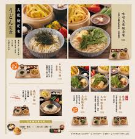
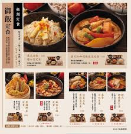
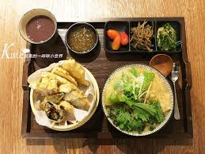

穗科手打烏龍麵
日復一日的手作堅持得來一種恆久於心的懷念從零開始，小麥粉和天然鹽水，依照獨家比例和當天氣候，
和出每天都有不同生命感的麵糰，再依照傳統步驟製作，每一道工序，都仰賴師傅敏銳的感官經驗，在變動的日常裡，端出一致的滋味。
吃飯這件小事也可以是件大事穗科懷抱對於食材的敬意，我們選用天然的美味蔬食，端出滿滿的心意料理。
從蔬果裡熬煮出精華，自製每一道醬料，讓飲食變得不再簡單。
歲末感謝季2018/12/02
【12月限定周三午間外帶買一送一】 穗科懷著感恩及親切的心，向您致上最高的謝意，舉辦歲末感謝祭， 12月每週三，午間外帶湯烏龍買一送一 (上湯烏龍麵、咖哩烏龍麵、泡菜烏龍麵、味噌烏龍麵、辣湯烏龍...



連到首頁
連到第三頁
連到第四頁
連到第五頁